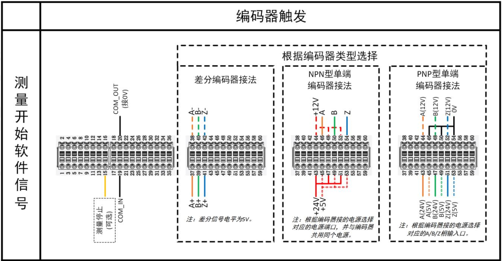

Module quản lý camera 3D tích hợp bộ công cụ phát triển (SDK) cho nhiều loại camera, giúp phần mềm VA hỗ trợ việc thu nhận ảnh và điều chỉnh tham số từ nhiều loại camera 3D.
Hiện tại hỗ trợ 8 loại camera:
Camera quét dòng: SSZN, Keyence, SmartRay, LMI, FocalSpec;
Camera ma trận: LCubor, RVC;
Camera laser điểm: Dòng Hypersen SF2000.
Có hai cách kết nối camera:
- **Kết nối tự động**: Sau khi phần cứng camera được kết nối, phần mềm sẽ tự động nhận diện và kết nối camera, ví dụ các loại như FocalSpec, LCubor, RVC.
- **Kết nối thủ công qua cấu hình IP**: Sau khi phần cứng camera được kết nối, cần mở giao diện cấu hình IP trong phần quản lý camera 3D để thiết lập loại camera và IP. Các bước như hình dưới:
Các tham số được chia làm 4 mục:
Khi di chuột đến tên tham số, phần mô tả ở góc dưới bên trái sẽ hiện giải thích đơn giản về chức năng, như hình:
Module quản lý camera 3D có thể hiển thị 5 loại hình ảnh (tùy camera sẽ hiển thị khác nhau):
- **Ảnh độ sâu**: Hiển thị khung ảnh đơn lẻ, hiển thị thông tin chiều cao theo tọa độ XY.

- **Ảnh độ sáng laser**: Ảnh laser từ camera quét dòng ở chế độ real-time, dạng ảnh xám, dùng để điều chỉnh khoảng cách làm việc.
- **Ảnh biên dạng**: Ảnh biên từ camera quét dòng ở chế độ real-time, trục Y là chiều cao thực tế, cũng dùng điều chỉnh khoảng cách làm việc.

- **Ảnh xám**: Ảnh khung đơn lẻ, hiển thị giá trị độ sáng tại các điểm XY.

- **Dữ liệu chiều cao/độ dày**: Chỉ dùng cho camera laser điểm, hiển thị độ cao của điểm.

Hỗ trợ lưu ảnh độ sâu và ảnh xám:
- Sau khi camera thu ảnh độ sâu, nhấn nút "保存深度图像" (Lưu ảnh độ sâu) ở góc phải trên để lưu với định dạng BMP.
- Đối với ảnh xám, click chuột phải vào cửa sổ ảnh và chọn “保存图像” (Lưu ảnh) để lưu lại (định dạng BMP).
Các bước kiểm tra:

Kiểm tra trình tự kích hoạt: cần đảm bảo công cụ thu ảnh đã khởi động xong trước khi gửi tín hiệu IO.
Khuyến nghị thiết lập phản hồi đóng vòng. Lưu đồ minh họa như sau:

**Trường hợp 1**: Không nhận được tín hiệu từ encoder. Kiểm tra dây kết nối tín hiệu trigger camera. Đối với SSZN, tham khảo sơ đồ dưới.
**Trường hợp 2**: Tín hiệu encoder nhận được quá ít. Kiểm tra dây lỏng, xác nhận thông số chia tần (có bị quá tần số không).
**Trường hợp 3**: Tín hiệu nhận quá nhiều. Kiểm tra nhiễu, kiểm tra chia tần.


Xem log thu ảnh để phân tích đoạn nào tốn thời gian nhiều:
Đường dẫn log: `...\LusterCache\3DCameraLog\3DCameraLog_2022-XX-XX.txt`
Kiểm tra nguồn cấp cho camera có ổn định không, khuyến nghị dùng nguồn độc lập.
Thường xảy ra sau khi dùng phép biến đổi affine sampling. Kiểm tra lại độ phân giải trục Y và độ phân giải ảnh.
Đồng thời kiểm tra nguồn cấp cho camera có ổn định không.
**Trường hợp 1**: Ảnh toàn đen → kiểm tra laser có phát không, thông số phơi sáng có quá thấp không, sản phẩm có nằm trong vùng làm việc của camera không.
**Trường hợp 2**: Không có ảnh → kiểm tra bản quyền driver camera có còn hiệu lực không.